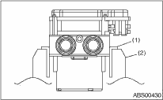
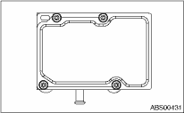
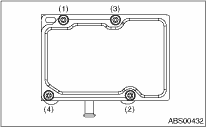

CAUTION:
• Because the seal of the ABSCM cannot be replaced, do not pull or peel it by lifting it up.
• Because the screw of the H/U will become slightly worn in every replacement procedure, 5 times is the maximum number of times for replacement. If a problem is found such as not being able to torque the screw to specifications even before 5 replacement operations are performed, replace the H/U body.
• When installing the ABSCM, always use new screws.
• When the sealing surface of the ABSCM or H/U is dirty or damaged and it cannot be removed or repaired, replace with a new part.
1. Remove the ABSCM&H/U bracket. 
2. To prevent entry of foreign objects and brake fluid leakage, plug the oil pressure port of the ABSCM&H/U using a screw plug, etc.
3. Set the pump motor section of the removed ABSCM&H/U face down on a vise.
NOTE:
Before securing a part on vise, set cushioning material such as wooden blocks, aluminum plate, or shop cloth between the part and the vise.

|
(1) |
Aluminum plate, etc. |
|
(2) |
Vise |
4. Using TORX® BIT E5, remove the four screws of ABSCM.
NOTE:
These screws cannot be reused.

5. Slowly pull out the ABSCM upward from the H/U.
NOTE:
To prevent damaging of coil section, remove the ABSCM straight up from H/U without twisting.
6. Make sure there is no dirt or damage on the sealing surface of the H/U.
CAUTION:
• Do not clean the ABSCM&H/U by applying compressed air.
• Even if damage is found on the H/U seal, do not attempt repair by filing or with a metal scraper. To remove the seal residue, always use a plastic scraper. Do not use chemical such as paint thinner, etc., to clean.
7. Position the coil of the new ABSCM to align with the H/U valve.
8. To prevent deformation of the ABSCM housing cover, hold the corner of ABSCM and install it to the H/U without tilting.
9. Using a TORX® BIT E5, attach/tighten new screws in the order of (1) through (4).
CAUTION:
Always use new screws.
Tightening torque:
1.5 N·m (0.15 kgf-m, 1.1 ft-lb)

10. Check that there is no foreign matter in mating surface between the ABSCM&H/U.
11. Using a TORX® BIT E5, tighten the screws in the order of (1) through (4) again.
Tightening torque:
3 N·m (0.3 kgf-m, 2.2 ft-lb)
12. Check that there is no gap in the mating surface between ABSCM and H/U.
13. Install the ABSCM&H/U to the vehicle.